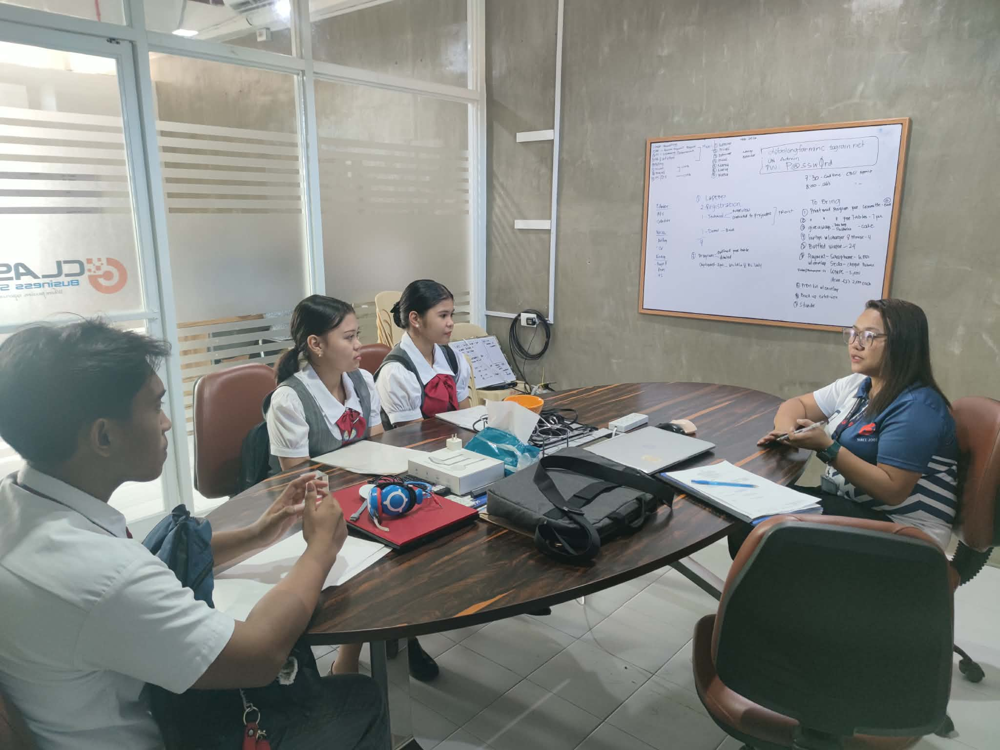
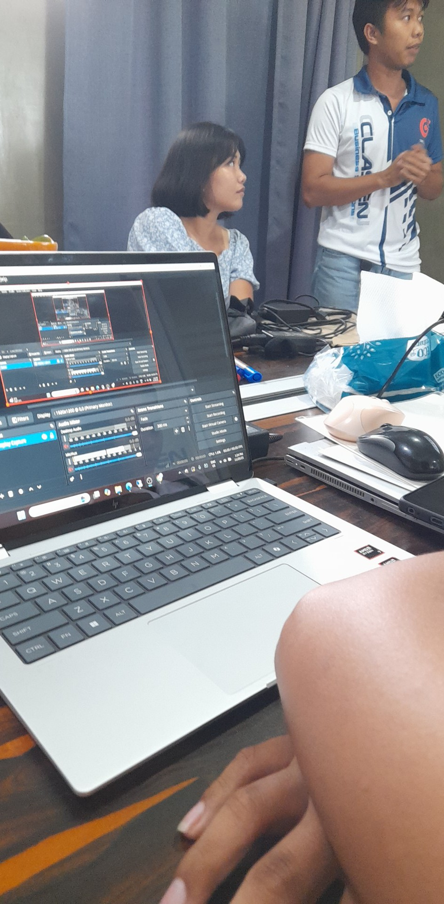
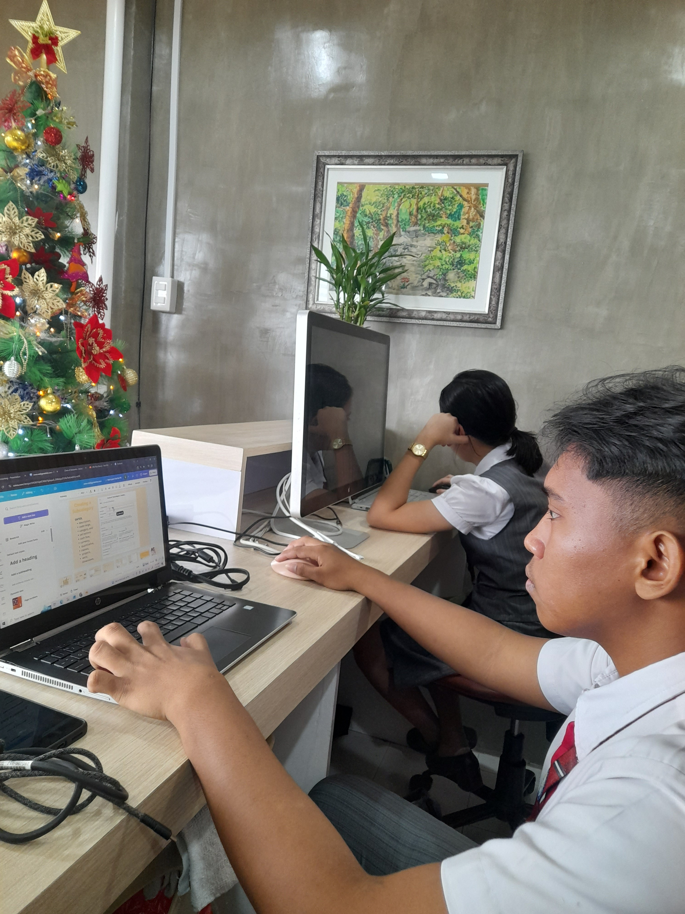
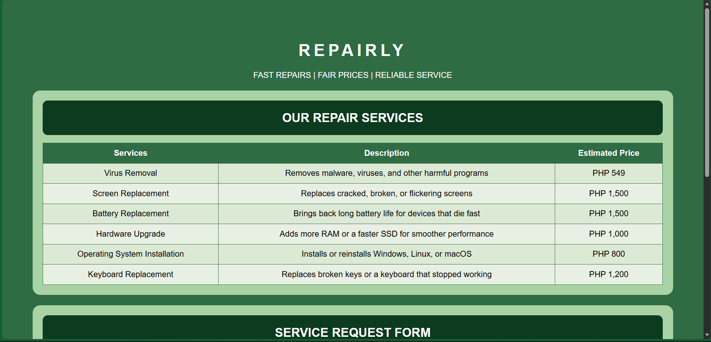
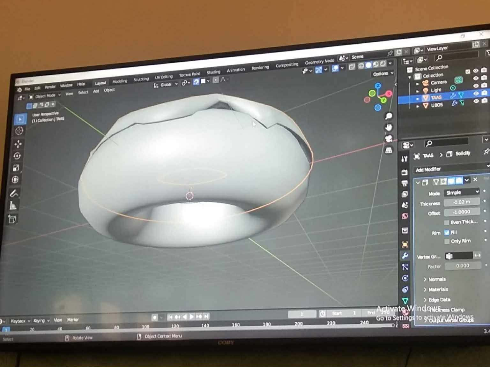
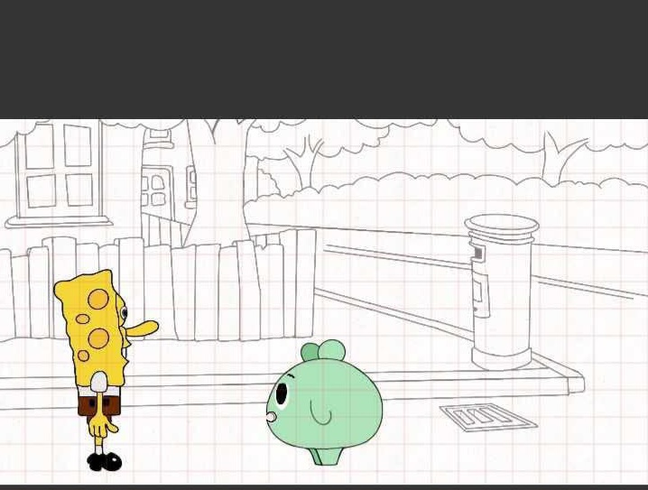

HTML5
I build pages with headings, links, images, lists, tables, and forms. I’m practicing how to choose the right element for each job.
IT student & curious builder
I’m an Information Technology student at Cordova Public College. I enjoy making websites, trying new ideas, and getting better at something a little more every day.
This is my space for the projects I make, the skills I’m building, and a bit of who I am outside of school.
StudyingBS Information Technology
ExploringWeb design, coding & new tech
Outside schoolCooking, movies, hiking & journaling
01 / About me
I’m Deonela Jizelle Capucanan, but most people call me Jizelle. I’m studying Information Technology at Cordova Public College because I want to understand how the apps and websites we use every day are made.
I’m happiest when an idea from my notebook turns into something that works. Right now I’m learning HTML, CSS, and C programming, and I’m exploring different parts of IT to find where I fit best.
I love cooking, watching movies, hiking, and writing in my journal. I also enjoy reading and editing videos when I have free time.
02 / Skills
I build pages with headings, links, images, lists, tables, and forms. I’m practicing how to choose the right element for each job.
I use colors, spacing, Flexbox, and grid to style a page. I’m also learning to make the same layout work on a phone.
I write small programs with variables, conditions, and loops. I like tracing each step to understand how the code runs.
03 / Experience

01 / Work immersion · Clasen Business Solutions Inc.
I completed my work immersion here, where I saw how a real workplace runs and practiced working with a team.


04 / Projects

01 / Web design · School project
A web page for a computer repair service that allows customers to submit repair requests. Developed as a school activity using HTML and CSS.
What I learned: Practiced planning a page layout, writing structured HTML, and styling it with CSS.

02 / 3D modeling · School project
A class project in which a 3D object of my own choice was modeled in Blender and then animated.
What I learned: The project introduced the basics of 3D modeling, mesh editing, and animation, and deepened my understanding of how digital objects are shaped, refined, and brought to life within a 3D workspace.

04 / Group project · Animation
A group project in which my team and I created a short animation in FlipaClip, featuring a character we chose together.
What I learned: The activity introduced the basics of frame-by-frame animation, and showed how movement, timing, and storytelling come together to bring a character to life.
05 / Contact
Say hello
You can message me about a project, a school activity, or something new we can learn together.
I usually reply to emails after class.
Lapu-Lapu City, Philippines
BS Information Technology
Cordova Public College